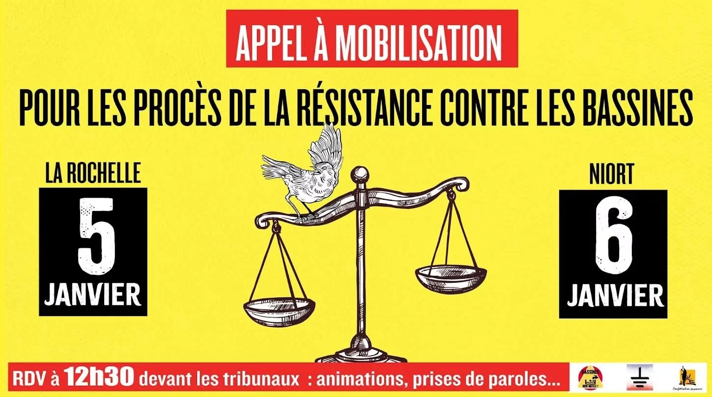

Publication relayée par le PCF 79
Procès liés aux méga-bassines. Appel à se rassembler à La Rochelle et à Niort
Date de mise à jour indiquée par Facebook · 4 janvier 2023
Texte de la publication · Bassines Non Merci
5 ET 6 JANVIER - APPEL À MOBILISATION POUR LES PROCÈS DE LA RÉSISTANCE CONTRE LES BASSINES
Jeudi 5 janvier - Rdv 12h30 - devant le tribunal de la Rochelle
Vendredi 6 janvier - Rdv 12h30 - devant le tribunal de Niort
Animations, prises de paroles et cantines devant les tribunaux
Nous vous invitons par ailleurs à co-signer l'appel ci-dessous en tant qu'organisations ou personnalités sur :
https://framaforms.org/5-et-6-janvier-appel-a...
L'appel et ses premiers signataires :
Le 5 et 6 janvier, à La Rochelle et à Niort, 7 personnes vont passer en procès pour avoir participé à des manifestations de résistance contre les méga-bassines les 22 septembre et 6 novembre 2021. Il s'agit de 2 moments emblématiques pour affirmer les raisons de la désobéissance collective, pour montrer notre solidarité et ne laisser personne seul.e face à la justice.
Le 5 janvier, 2 personnes accusées d'avoir participé au débâchage de la bassine de Cram-Chamban le 6 novembre 2021 vont être jugées au tribunal de La Rochelle. Le 6 novembre 2021, ce sont non pas 2 mais près de 3000 personnes qui participaient ensemble, en découpant la bâche, au désarmemement d'une bassine construite et remplie depuis des années illégalement à Cram-Chaban. En parallèle, un autre groupe, incluant le porte-parole national de la confédération paysanne en démontait la pompe. Ce sont les deux actes collectifs qui ont mis les méga-bassines sous le feu des projecteurs. Ce sont les formes de résistance qui ont permis de faire connaître nationalement les enjeux d'accaparement et de dégradation de la ressource en eau liés à ces infrastructures. 10 jours plus tard, une tribune publiée dans le journal Le Monde et signée par 240 représentant.es de syndicats, partis politiques, ONG et scientifiques affirmait que " La lutte pour le partage de l’eau est une question vitale". Elle appuyait alors la nécessité de la désobéissance - à l'instar de ce qui avait permis les succès du combat anti-ogm - face aux projets de méga-bassines. Quelques mois plus tard, Nicolas Girod, porte-parole national de la Confédération Paysanne, était convoqué à la gendarmerie et finalement condamné à l'euro symbolique pour avoir démonté la pompe, tandis que la justice ratifiait l'illégalité définitive de la Bassine de Cram-chaban. Mais après des mois d'enquête, la police a identifié 2 autres personnes qui auraient participé à la neutralisation de cette bassine et décidé de les traîner devant les tribunaux avec des menaces de lourdes peines à la clé. Il n'est pas question de laisser aujourd'hui ces 2 personnes être condamnées pour avoir participé - à l'instar de milliers d'autres - à faire que cette bassine ne soit pas à nouveau remplie. Nous plaiderons avec eux, l'état de nécessité, une notion juridique reconnue dans de nombreux pays, qui consiste à autoriser une action illégale pour empêcher la réalisation d'un dommage plus grave pour la terre et celles et ceux qui l'habitent.
Le 6 janvier, ce sont 5 personnes dont 3 agriculteurs qui seront jugées au tribunal de Niort pour l'envahissement le 22 septembre de la bassine en construction de Mauzé-sur-le-Mignon, lors duquel une des pelleteuses du chantier fut mise hors d'état de nuire.
Plus d'un an avant la mobilisation désormais historique de Sainte-Soline, c'était la première intrusion collective sur la première des 16 bassines en projet dans les Deux-Sèvres, et le premier signe fort que nous ne les laisserions plus faire. L'arrivée d'une vingtaine de tracteurs, d'un troupeau de moutons, de centaines de personnes au cœur du cratère avait marqué, entre autres, l'engagement du monde paysan dans ce combat contre ces dispositifs de maintien d'une agriculture productiviste. Elle montrait en acte le refus d'un modèle qui assèche et empoisonne les sols au profit de lobbys industriels et d'une minorité d'irrigants. Cette action avait mis en avant la nécessité, là encore vitale, d'une agriculture paysanne protectrice de la biodiversité plutôt que le gaspillage d'argent public par millions dans des méga-bassines.
La justice décide aujourd'hui d'isoler quelques personnes pour tenter d'inhiber le courage des foules qui se rassemblent de plus en plus nombreuses, malgré les interdits, pour défendre l'eau et mettre fin aux projets de bassines. Il est tout aussi crucial, pour la suite de la lutte, de montrer une solidarité sans faille en étant présent.es devant les tribunaux aux côtés des camarades inculpés les 5 et 6 janvier, que de revenir en masse manifester pour stopper les bassines le 25 mars prochain.
Les 5 et 6 janvier nous affirmerons que nous en étions aussi et que nous en serons encore. Les 5 et 6 janvier, face aux manoeuvres judiciaire d'un gouvernement inféodé au lobby agro-industriel, nous ferons - avec des paysan.nes, des scientifiques, des militant.es et habitant.es des territoires concernés - le procès des bassines.
Pour l'arrêt des chantiers et la défense de l'eau. No Bassaran !
Et en parallèle de ces rassemblements :
Jeudi 5 Janvier : conférence de Christian Amblard , CNRS, spécialiste des milieux aquatiques - 20h30- Niort (à confirmer)
Vendredi 6 Janvier: concert de soutien aux inculpés, programmation et lieu à venir
Premiers signataires de l'appel à rassemblement :
Bassines Nonmerci - Les soulèvements de la terre - la Confédération paysanne
avec un ensemble de collectifs :
Action Non Violente 37
Alternatives et autogestion
AFA La Rochelle & alentours
AFA La Roche-Banlieue - Bastyon de Résistance
Alerte Pesticides HAUTE Gironde
Alternatiba du Mans
Alternatiba - ANV Cop 21 Rennes
Attac 33
ATTAC Touraine
Attac Vendée
AVEC (Association de Veille Environnementale du Cher)
CERCLE 49
CGT 79 Deux-Sèvres
Ciel Vert (L’Houmeau 17)
Collectif Action Climat - CAC 41
Collectif Alsace des luttes paysannes et citoyennes
Collectif anti-fasciste de la Sarthe
Collectif Bassines Non Merci Berry
Collectif Bretagne contre les fermes-usines
Collectif Eau 88
Collectif des faucheurs et faucheuses volontaires d'OGM
Collectif GP2i 85
Collectif "Vous N'êtes Pas Seuls" (VNPS)
Collectif de soutien aux victimes des pesticides de l’ouest
Confédération paysanne 05
Confluences 81
Coordination EAU Île-de-France
Des habitant.es de la Zad de Notre Dame des Landes
Eau secours 62
EBC Vercors
ECOavenir
Eco-festival Ça Marche
Ecopolien - Atelier d'écologie politique francilien
Eelv Deux-Sèvres
EELV Poitou-Charentes
EELV Quimper Cornouaille
Extinction Rebellion Tours
France Insoumise - Groupe d'action d'Alès
Fridays For Future Quimper
FSU 79
Greenpeace La Rochelle
Greenpeace Nancy
Greenpeace France / Groupe local de Poitiers
Greenpeace France / Groupe local de Tours (37)
Groupe d'action de la France Insoumise de Nieul sur mer/L'Houmeau/Esnandes
Groupe des élus écologistes, solidaires et citoyens de la région Nouvelle-Aquitaine
Groupe d'action de la France Insoumise La Rochelle avec Jean-Luc Mélenchon
Groupement forestier de protection des feuillus du Morvan (GF)
L'Antivol
La Boisselière
La France Insoumise 32
La France Insoumise Tours
La France Insoumise 79
La friche 79
La graine solidaire
La Tête Dans Le Sable
MakiGo Protecting the Natural World - Protection du Vivant
PCF 79 - Parti Communiste Français fédération des Deux-Sèvres
Les Ami.e.s de la Confédération paysanne
Les Communaux, Seine Saint-Denis
L'eau qui mord
LDH79-Niort
LDH section Angoulême Charente
LDH – Poitou-Charentes
LDH Fontenay-Luçon Sud Vendée
LFI 16-3
LP 79
MINGA
Nous voulons des coquelicots grand Châtellerault
NUPES 16-3
NUPES 79-3
Pour une écologie Populaire et Sociale Tarn (PEPS 81)
Résistance Écologiste Rennes
Rendez-nous la mer-ar mor·Bro an Oriant
Révolution Ecologique pour le Vivant, section Nouvelle Aquitaine
Scientifiques en Rébellion Bordeaux
Sillage
Solidaires 37
Solidaires 79
STAF29-CNT (syndicat CNT de Quimper)
Syndicat CNT 34 ESS
Terres de luttes
Thur Ecologie & Transports
Union syndicale Solidaires
Université Populaire Pour la Terre (Tours)
Vie Pays Environnement AISNE
Youth For Climate - Angers
Youth For Climate Île-de-France
Et de personnalités :
Corinne Morel Darleux, autrice
Thierry Paquot, philosophe
Camille Pasquier, conférencière gesticulante
Alexandra Petit
Anthony Pecqueux, sociologue, CNRS
Gabriel Amard, Député et co-président de l’association nationale du réseau des élus-es insoumis-es et citoyen-nes
Riccardo Petrella, Professeur é ml écrite de l'Université Catholique de Louvain (Belgique)
Maxime Laisney, Député LFI-NUPES de Seine-et-Marne
Charlotte Leduc, Députée LFI-NUPES de Moselle
Clémence Guetté, Députée LFI-NUPES 2ème circonscription du Val-de-Marne
Marie-Anne Guillemain, co-cheffe de file de la France insoumise dans la Nièvre (58)
Lucienne Haese, Présidente de l'association Autun Morvan Ecologie et co-gérante du
Laetitia Hamot, Maire de La Crèche
Yolaine de La Bigne, Journaliste et Fondatrice de l’Université d’été de l’animal,et de la Journée mondiale des intelligences animales
Marie Pochon, Députée EELV-NUPES de la Drôme
Thomas Portes, député LFI-NUPES de la 3ème circonscription de Seine-Saint-Denis
Yannick Maillou, Conseiller municipal La Crèche (79)
Pascale Martin, députée LFI-NUPES de Dordogne
Marianne Maximi, députée LFI-NUPES du Puy-de-Dôme
Chantal Pitard
Claude Pourcher
Jean-Claude Raux, député EELV-NUPES de Loire Atlantique
Josep Rafanell i Orra, Écrivain, psychologue
Damien Roudeau, auteur De bande dessinée
Danielle Simonnet, Députée LFI-NUPES de Paris
Jean-Pierre Anselme, journaliste, La Rochelle
Kim Deger, Journaliste et communicant chez D'Ailleurs et d'Ici Écologie, féminisme et antiracisme
Juliette Duquesne, journaliste Carnets d’alerte
Guillaume Faburel, Géographe, Université Lyon 2
Emmanuel Fernandes, Député LFI-NUPES de la 2ème circonscription du Bas-Rhin
Barbara Glowczewski, anthropologue
Geneviève Azam, économiste
Jérôme Baschet, historien
Delphine Billaud, Association Adret Morvan
Nathalie BLANC
Marie-Line Bobinnec, Artiste
Inès Cazalas, enseignante, chercheuse et maîtresse de conférences en littérature comparée à l’université Paris-Diderot
Messina Maryline
Isabelle STENGERS, philosophe des sciences belge
Andrée Taurinya, Députée LFI-NUPES de la Loire, 2° circonscription
Olivier Tric
Florian Vaurs, doctorant en sciences sociales, CRESPPA
Laure Ferrand, sociologue
Pierre Bitoun, sociologue
Aurélie Trouvé, députée LFI de la 9e circonscription de Seine-Saint-Denis
Michel Sala, Député LFI-NUPES de la 3e circonscription du Gard
François Gibert, Conseiller Municipal et communautaire Niort
Pierre Morin, Conseiller municipal et communautaire Bressuire
Laurent Ratat, Conseiller municipal EELV délégué à l'environnement commune de Saint Michel (16)
Anne-Marie DESCOT, membre du collectif NINA contre le projet GPSO LGV ni ici ni ailleurs
Yann Jezequel, conseiller municipal et communautaire, Niort
Elsa Fortage, Elue municipale à Niort
Martin Letellier, Technicien de rivières
Monique de Marco, Sénatrice EELV de Gironde
Karine OLIVIER, Conseillère municipale - Militante LFI
Kaïna Privet, écologue
Pierre-Luc Bardet, Enseignant-chercheur en Biologie
Mathilde Dugomeau, Membre Nupes
Valentin Boulay, Co-animateur les Jeunes Insoumis-es de La Rochelle-Ré
Sèverine Delbosq, Conseillère municipale Ville de l'Île-Saint-Denis
MARC Odin, Chercheur en Sciences de la Terre, CNRS
Cédric Herou
Katia Bourdin, Conseillère Régionale EELV Nouvelle Aquitaine
Nathalie Caspard, maîtresse de conférence à l'UPEC
Bastien Dusserre, paysan
Mathilde HIGNET, Députée LFI-NUPES de la 4ème circonscription d’Ille-et-Vilaine
Beauval Valentin, Membre de la CP 49 et d'AVSF
Catherine BONY, conseillère régionale EELV Auvergne Rhône Alpes
Charrier Cécile, citoyenne et avicultrice paysanne, Gallina'Cé
Sylvain Kuppel, hydrologue, IRD
Sandra Regol, Députée EELV-NUPES de la 1ère circonscription du Bas-Rhin
Monga Lolita, Auteur comedienne
Lionel Pannetier, Administrateur
Reynald Coulon, Metteur en scène
Eric Vidal
Yvelise Clot
Gillou
Marie-Luce Bertrand
Romain Baraton
Noël Guillon
Joris Trubert
Manuel Blanchard
Christophe Naud
Claire Marie BERNIT
Grégory Lebert
Fabienne Lafon
LEHMANN Martine
Jf Sarazin
Richard Mullon
Claire Lanel
Cristelle Parguez
Delphine Caillon
Chantal Bigot
Marianne GIRARD
Yves Milleville
Jean-Jacques Garbay
Anaïs Bréda
Noé Dubray
Estelle Tronson
Danielle Maillet
Eugénie Pothier
Thierry Celdran
Alain POUHET
Prioult Céline
AUTISSIER Philippe
Siebold Béatrice
Siebold Hubert
Liebert Marie Elise
Du Plessis Anne
Mathilde Dugomeau, Membre Nupes
Valentin VIENNOT
Meurisse Jean
Michèle Berteaux
Christian LEFEVRE
Pascal GRANDJEAT
Jean-Louis Ecuer
Hervé Saint-maxent
Elise VOL
Nina Giorgi
Christian PAULLES
Sophie Passebon
Julie Couprie
Jean-Luc DRON
Philippe Jaunet
AUBRET JEAN-MARC
Marianne LEFEVRE
Durand Jocelyne
Martine VILLENAVE
Gilbert Lepine
Tublet Chantal
Cruette Isabelle
Roux Stéphanie
Repères éditoriaux
L’affiche indique deux rendez-vous à 12 h 30, le jeudi 5 janvier 2023 à La Rochelle et le vendredi 6 janvier à Niort.

Sources
Bassines Non Merci · publication relayée par le PCF 79 · bibliothèque Facebook · AR-0002-FB-01787
À lire aussi · À Niort, appel à soutenir les militants poursuivis le 27 juillet